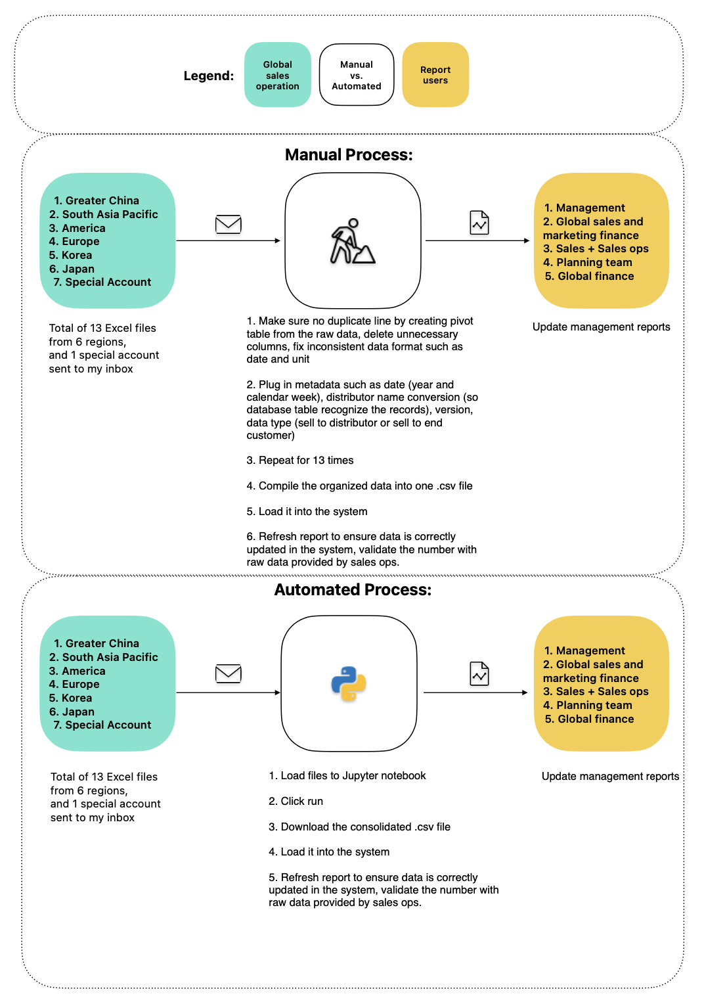

TL;DR
I automated a data compilation task, boosting efficiency by 75% (cutting work time from 4 hours to 1 hour) using Python. The solution was passed on to my successor when I left the company.
-----
Back in 2020, my manager resigned, assigning me one of his crucial tasks: updating weekly global sales forecasts in our database. Although a straightforward process, it demanded meticulous attention to detail for zero error tolerance.
My former manager manually collected and compiled data using Excel for years. At that time, I’ve only known some libraries such as Panda, NumPy and Selenium. I thought it would be a great opportunity to write a script to handle data cleansing and compilation, all the time left I can work on actual analysis.
It is worth mentioning, every single excel file was not formatted the same, it is obviously difficult to force everyone to use the exact same excel template when such process is not conducted in the system.
-----
Using FreeForm, I created a simple data flow to compare the potential automation workload. The Python Script really helped me eliminate human errors and made it easier for me to accommodate last minute changes requested by data owners.

-----
I used Panda to read and cleanse data, such as renaming the data, pivoting, unpivoting, string slicing, and creating a standard format that includes metadata such as date, region and version. I also used glob and os libraries to do the final consolidation of the cleaned files.
At the end, my weekly task can be done as quickly in less than 20 minutes. Most of the time I spent was on downloading and uploading files to Jupyter notebook, and doing sanity check.
My takeaway:
Beyond my past experiences, this project opened up unlimited possibilities for learning. Breaking out of my comfort zone was essential, and the moment I demonstrated to my ex-colleague that one click could achieve what once took an hour, I felt extremely proud and happy—a moment that continues to drive me forward.
-----
I've saved some screenshots of the script with blurred sensitive information.